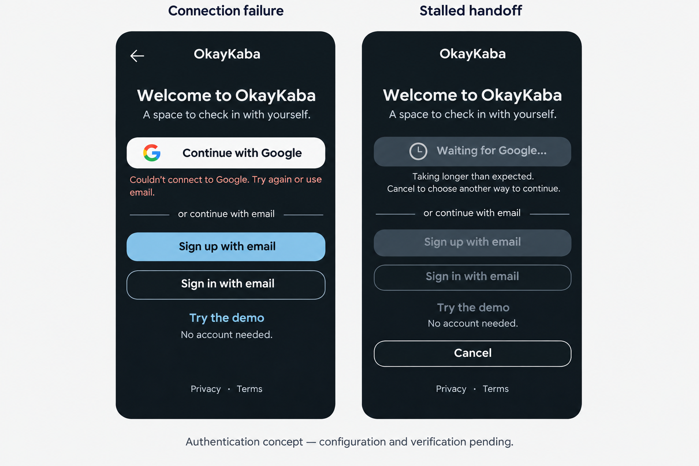

OkayKaba · Account choice
One coherent revision of the approved dark direction and default typography. Five proposed states, with recovery and navigation notes.
Mockups only. Google authentication requires configuration and verification. No app code or GitHub changes.
 1 · Idle → 2 · Opening Google → 3 · User cancellation. Cancel restores account choice.
1 · Idle → 2 · Opening Google → 3 · User cancellation. Cancel restores account choice.

4 · Connection failure: retry or choose another method. 5 · Stalled: cancel first, then select another method.
Navigation contract
- Android Back and Cancel during handoff restore account choice.
- Every retry is a fresh explicit attempt. Late responses cannot replace a subsequent demo choice.
- Try the demo leads to the existing device-storage explanation.
Audit outcome
All five requested states are present. Button order, neutral cancellation and separate failure/stalled recovery are visible. Runtime Back, callback races, focus, contrast and text scaling still require prototype testing. See the audit for evidence and limits.
Stopped for your design review. No other screens have been revised.